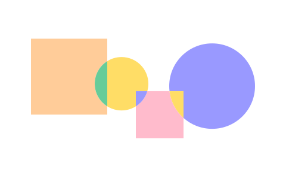
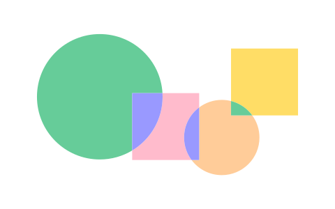
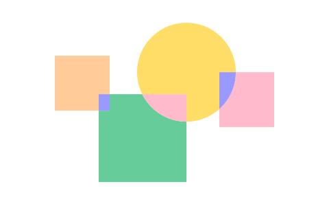
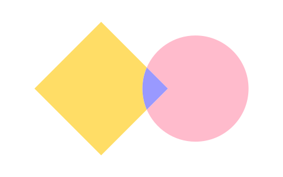

Lab Hacker
O que fazemos
Participação
O LabHacker estimula o desenvolvimento de ações e ferramentas que ampliem a participação social no processo legislativo. É gestor do Portal e-Democracia, que apresenta diversos modelos de participação, como interação em audiências, edição colaborativa de projetos de lei e debates temáticos. As ferramentas do e-Democracia também serão utilizadas por outros órgãos do Legislativo e do Executivo.
Transparência
Incentivamos o desenvolvimento de aplicações digitais que permitam a visualização mais intuitiva e simplificada das informações legislativas. Produzimos ferramentas em código aberto e as liberamos no github para aperfeiçoamento e uso do software sem custos por outros órgãos públicos. Em 2017, trabalhamos na elaboração do guia de Parlamento Aberto, que orienta as vertentes de transparência, participação social e controle social para melhor capacitar os órgãos do Legislativo.
Experimentação
O LabHacker é um espaço de liberdade para experimentos e aprendizagem, onde o erro é permitido em busca da inovação, do olhar fora do convencional. Aqui realizamos testes de usabilidade para produtos e serviços, sempre com foco no interesse do cidadão. Também experimentamos ferramentas e debatemos o uso de novas tecnologias para disseminar as melhores práticas.
Colaboração
O LabHacker trabalha em colaboração com uma rede de desenvolvedores e de ativistas cívicos, tanto para melhorar seus projetos e ferramentas quanto para ampliar a participação social e a transparência no Legislativo. O trabalho colaborativo está no planejamento inicial das atividades; na troca de informações e expertise; e na facilitação de processos para aumento da transparência e da participação.
Inspiração
Também realizamos eventos e atividades com especialistas e pessoas inspiradoras para trocar a cultura da burocracia e zona de conforto pela inovação no serviço público; disseminar casos de sucesso nas mais variadas áreas; além de falar sobre cidadania e tecnologia para diferentes públicos.
Mande sugestões, críticas, ou ideias pra gente desenvolver 😉